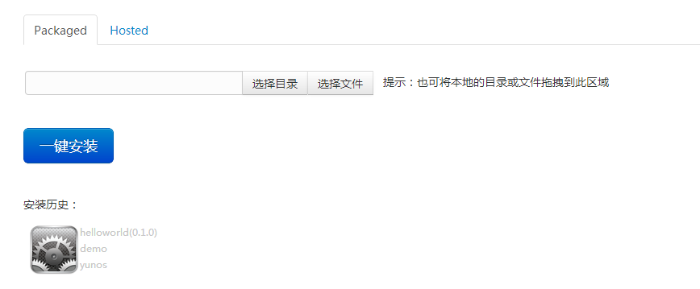
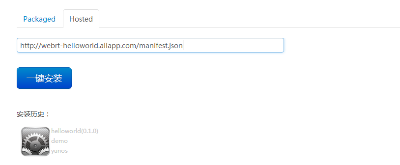

Created by 云OS开发者平台
{
"name": "Helloworld",
"version": "1.0.0",
"type": "certified",
"package": "com.yunos.samples.helloworld",
"minimum_runtime_version": "0.0.1",
"description": "a simple WebApp sample code",
"icons": {
"36": "/style/icons/36/icon-36.png",
"48": "/style/icons/48/icon-48.png",
"72": "/style/icons/72/icon-72.png",
"96": "/style/icons/96/icon-96.png"
},
"developer": {
"name": "yunos",
"url": "http://www.yunos.com"
},
"appcache": "settings-host.appcache",
"launch_url": "http://webrt-helloworld.aliapp.com/index.html",
"locales": {
"zh-rCN": {
"name": "Helloworld",
"description": "一个简单的WebApp代码实例",
"developer": {
"name": "NG-WebOS",
"url": "http://www.yunos.com/"
}
}
},
"fullscreen": "true",
"platform": "phone",
"permissions": {
"geolocation": {}
}
}
screen.lockOrientation("landscape");
Packaged WebApp to device
Hosted WebApp to device
